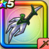

デスピサロの牙
攻略班 6.5点 / ヴァイパーファングカオスエッジジバリカバンパイアエッジデスファング※錬成で強化可能
くわしい特徴
【レベル別習得スキル】 Lv1ヘルバトラーへのダメージ+30% Lv1ヴァイパーファング（消費MP：5）刃に猛毒を宿し敵1体に威力130%の斬撃ダメージを与えたまに猛毒を与える Lv10カオスエッジ（消費MP：9）混沌の剣技で敵1体に威力175％の斬撃ダメージを与えたまに混乱させる Lv15ジバリカ（消費MP：12）行動時に大爆発する魔法陣を仕掛け敵1体にジバリア属性の呪文小ダメージを与える Lv20バンパイアエッジ（消費MP：13）敵1体に200％の無属性斬撃ダメージを与え、与えたダメージの20％を自身のHPとして回復する。 Lv30デスファング（消費MP：18）凄まじい連撃でランダムな敵に威力110%のメラ属性の斬撃攻撃を3回する Lv35究極エビルプリーストへのダメージ+30% Lv40会心率+2% Lv45攻撃時+2%の確率で猛毒を与える Lv50攻撃力+12錬成スキル改1けもの系へのダメージ+10%改2デスファング改（消費MP：26）凄まじい連撃でランダムな敵に威力130%のメラ属性の斬撃攻撃を3回する改3けもの系へのダメージ+10%改4錬成ぶき特別演出解放・メガモン討伐結果発表時に特別演出が追加・武器の見た目に特別なエフェクトが追加 【限界突破スキル】 1凸スキルの斬撃・体技ダメージ+5% 2凸スキルの斬撃・体技ダメージ+5% 3凸スキルの斬撃・体技ダメージ+5% 4凸スキルの斬撃・体技ダメージ+5%